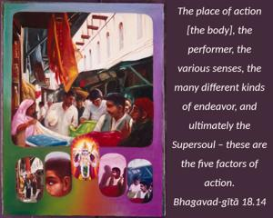
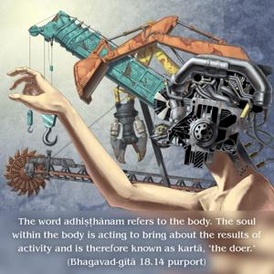
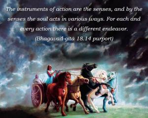
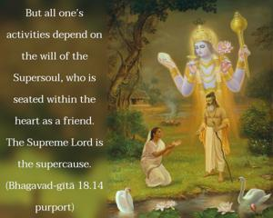
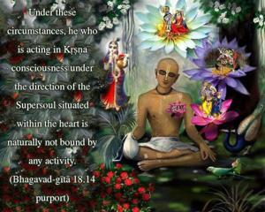
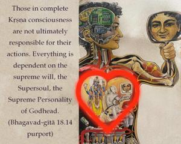

The place of action [the body], the performer, the various senses, the many different kinds of endeavor, and ultimately the Supersoul – these are the five factors of action.






The word adhiṣṭhānam refers to the body. The soul within the body is acting to bring about the results of activity and is therefore known as kartā, “the doer.” That the soul is the knower and the doer is stated in the śruti. Eṣa hi draṣṭā sraṣṭā (Praśna Upaniṣad 4.9). It is also confirmed in the Vedānta-sūtra by the verses jño ’ta eva (2.3.18) and kartā śāstrārthavattvāt (2.3.33). The instruments of action are the senses, and by the senses the soul acts in various ways. For each and every action there is a different endeavor. But all one’s activities depend on the will of the Supersoul, who is seated within the heart as a friend. The Supreme Lord is the supercause. Under these circumstances, he who is acting in Kṛṣṇa consciousness under the direction of the Supersoul situated within the heart is naturally not bound by any activity. Those in complete Kṛṣṇa consciousness are not ultimately responsible for their actions. Everything is dependent on the supreme will, the Supersoul, the Supreme Personality of Godhead.